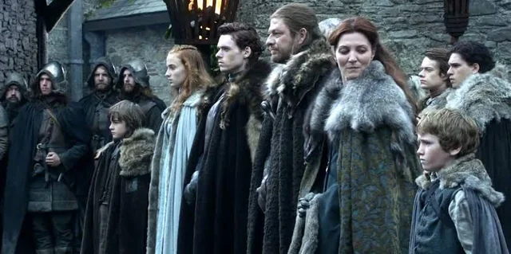
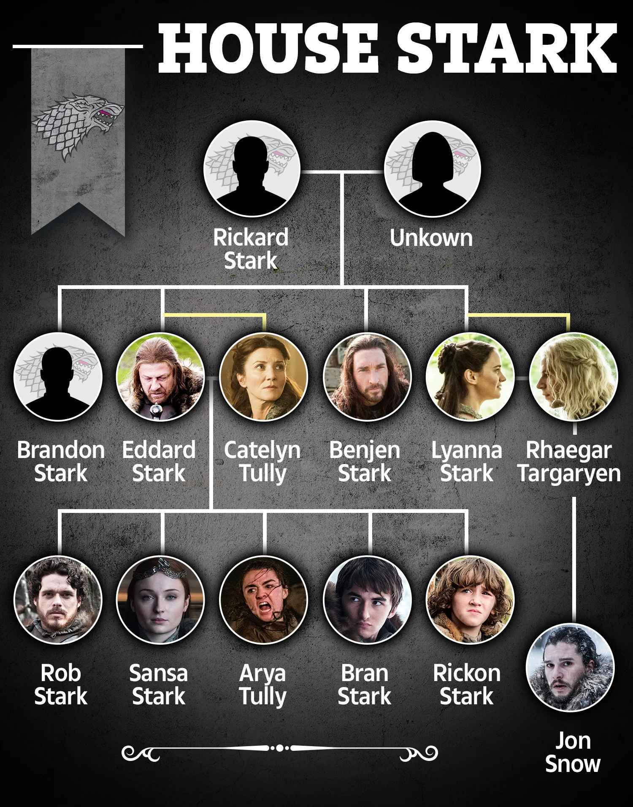

Casa Stark de Winterfell
Historia
La Casa Stark, una de las más antiguas y nobles en Westeros, tiene una historia que se remonta a la Edad de los Héroes, siendo fundada por el legendario Brandon el Constructor. Este líder construyó Winterfell y el Muro, marcando el comienzo de una influencia que se extiende por generaciones. Durante ocho mil años, los Stark gobernaron como Reyes del Invierno, enfrentando desafíos como el Rey de la Noche, derrotado por Brandon el Rompedor y Joramun.
A lo largo de los siglos, la Casa Stark enfrentó rivales como los Reyes Barrow y los Reyes Rojos.
Superaron desafíos marítimos y terrestres, incluso luchando contra la Casa Arryn por el control de las Tres Hermanas.
La historia de los Stark está marcada por alianzas, como la con los Bolton, antiguos enemigos que juraron lealtad, y eventos como la victoria sobre piratas en el río White Knife.
En la Conquista de Aegon, Torrhen Stark, conocido como "el Rey que se arrodilló", optó por la sumisión pacífica, convirtiéndose en Guardianes del Norte en nombre de los Señores de los Siete Reinos.
A lo largo de las eras, los Stark mantuvieron una relación compleja con los Targaryen, participando selectivamente en eventos como la Rebelión de Desertores de la Guardia de la Noche.
La Casa Stark también tuvo un papel destacado cuando Lord Cregan Stark contribuyó a la causa de Rhaenyra Targaryen.
Aunque brevemente asumió como Mano del Rey, la "Hora del Lobo," enfrentó amenazas en el norte como el invierno, la hambruna y la peste.
La sucesión de los Stark fue tumultuosa, con desafíos internos y amenazas externas.
El legado de la Casa Stark continúa con figuras como Eddard Stark, protagonista de la Rebelión de Robert, y su hijo Robb Stark.
La promesa hecha por Eddard en la torre de alegría sigue siendo un misterio, agregando capas de intriga a la rica historia de esta familia.
Con su papel como Guardianes del Norte, los Stark han resistido las pruebas del tiempo y se han ganado un lugar destacado en la historia de Westeros.
En el resurgimiento de la misteriosa muerte de Jon Arryn, el rey Robert Baratheon ofrece a Lord Eddard Stark el puesto de Mano del Rey.
La sospecha de la participación de los Lannister en la muerte de Arryn desencadena una serie de eventos que lleva a Eddard a aceptar a regañadientes el cargo.
Su hija Sansa es comprometida con el príncipe Joffrey Baratheon, consolidando la alianza Stark-Lannister.
La historia da un giro oscuro cuando Bran Stark es testigo de un romance ilícito entre Cersei Lannister, lo que provoca un intento de asesinato y una cruda revelación para Eddard sobre los secretos de los Lannister. Mientras Eddard se dirige a King's Landing, su hijo bastardo Jon Snow se embarca hacia el Muro con su tío Benjen.
Catelyn Stark, angustiada por el destino de Bran, descuida sus responsabilidades en Winterfell.
Mientras tanto, en la capital se revela una red de engaños políticos e inestabilidad financiera, con Eddard descubriendo deudas alarmantes y un plan para asesinar a Daenerys Targaryen.
Al negarse a respaldar el asesinato, Eddard renuncia como Mano, enfrentándose a ataques subsiguientes y sobreviviendo a un enfrentamiento con Jaime Lannister. La narrativa se expande para incluir las experiencias de Jon Snow en el Muro, la desafianza de Arya en la capital y la movilización de Robb Stark contra los Lannister.
La investigación de Eddard lo lleva a una impactante verdad sobre los hijos de Cersei, resultando en un enfrentamiento fatal.
Robb se proclama Rey en el Norte después de la injusta ejecución de Eddard en King's Landing.
La familia Stark se dispersa: Arya escapa, Sansa se convierte en una peón y Robb lidera una rebelión. La saga se desarrolla con batallas, traiciones y lealtades cambiantes.
Los éxitos militares de Robb Stark se ven empañados por errores políticos, llevando finalmente a la infame Boda Roja, una traición brutal que devastó a la Casa Stark.
Los miembros sobrevivientes de los Stark se dispersan, con Jon Snow enfrentando complejas relaciones más allá del Muro y Arya embarcándose en un viaje de supervivencia y venganza. El caos persiste con Sansa sufriendo tormento en King's Landing, Bran desarrollando habilidades místicas más allá del Muro y la ubicación de Rickon permaneciendo incierta.Eventos recentes
Personajes

Arból genealógico
